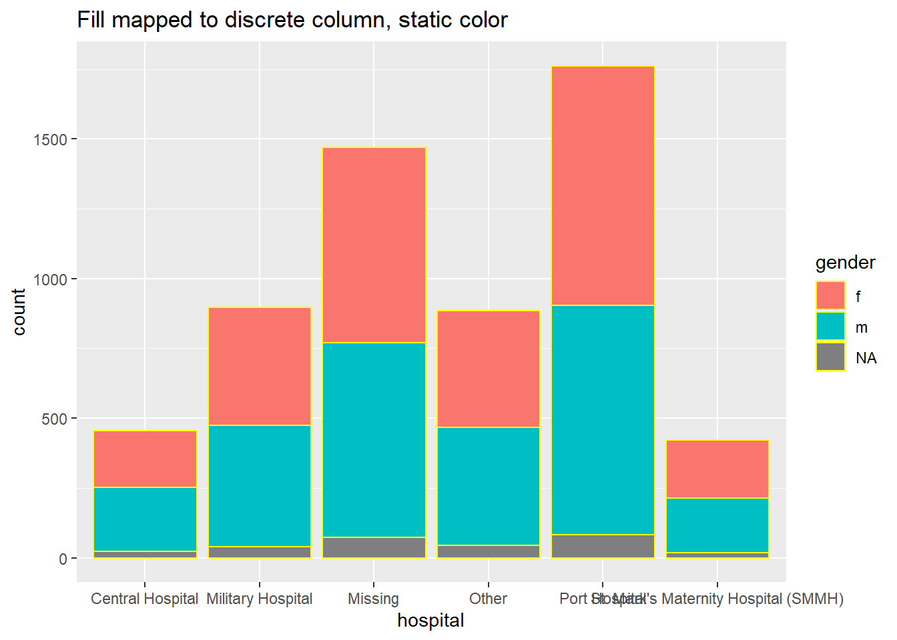
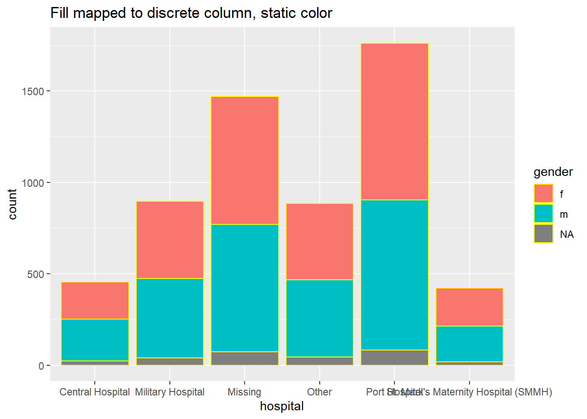
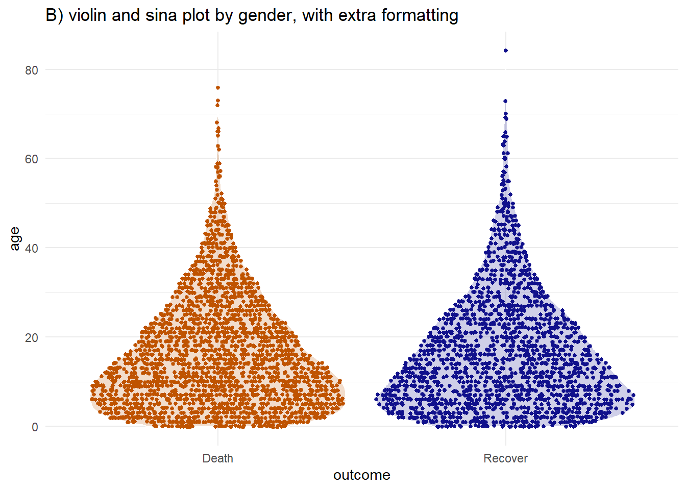
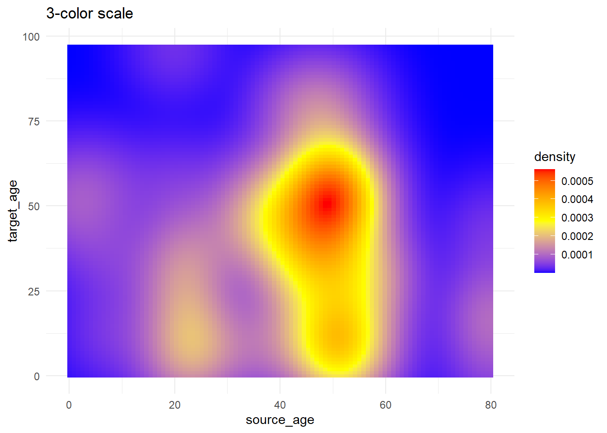
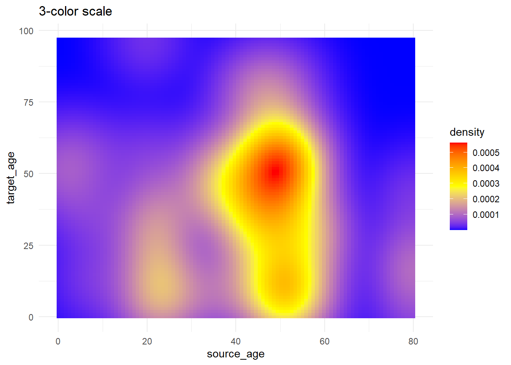
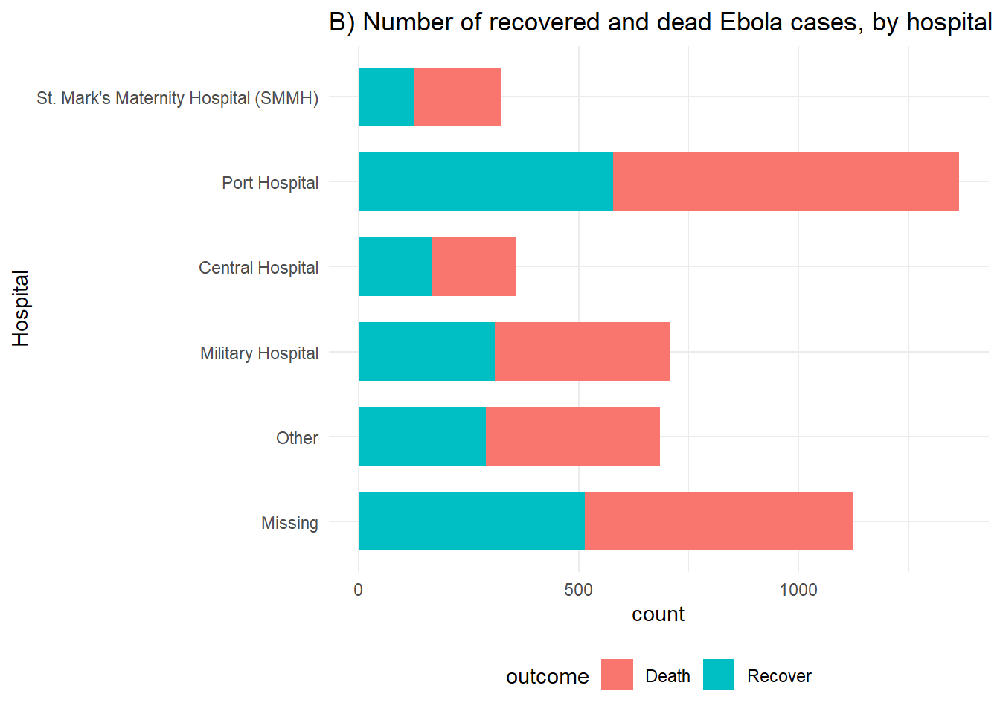
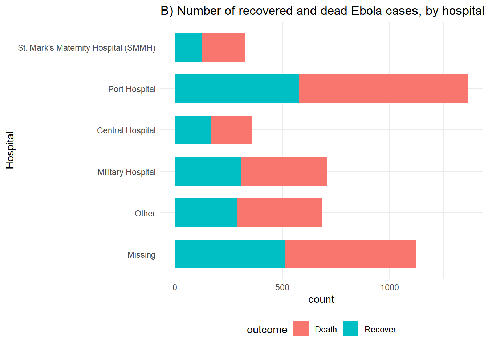
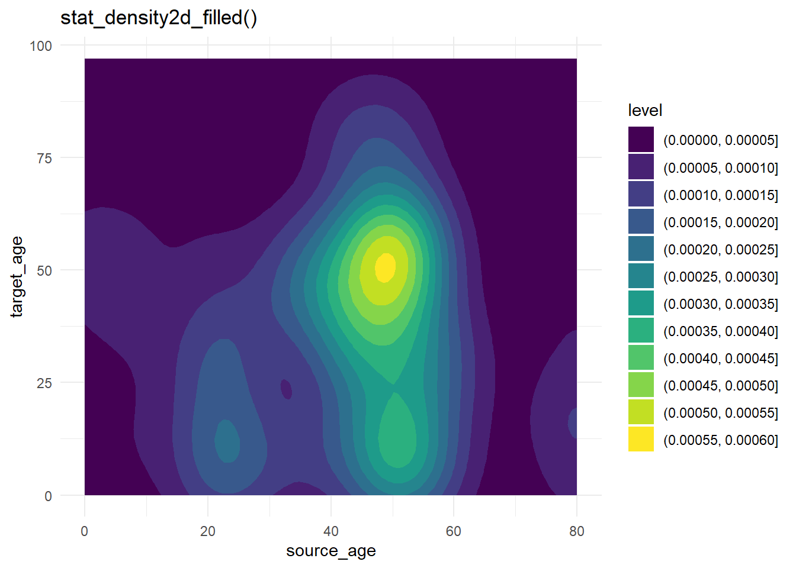
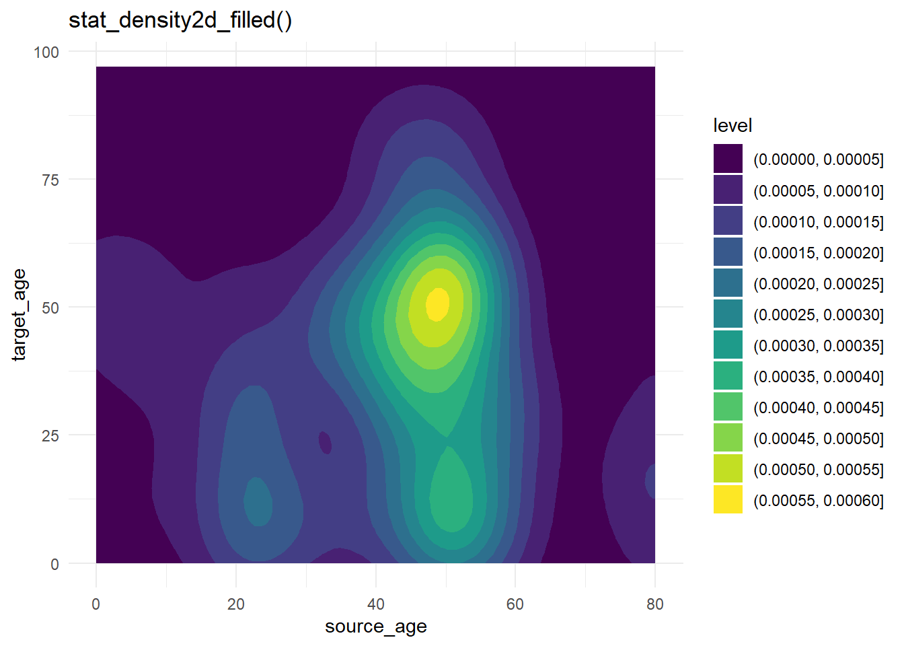

31 Trucs et Astuces avec ggplot
Dans cette page, nous couvrirons les trucs et astuces pour rendre vos ggplots nets et esthétiques. Voir la page sur les bases de ggplot pour les principes de base.
Il existe plusieurs tutoriels ggplot2 dont certains listés à la section Ressources. Vous pouvez également télécharger cette fiche technique sur la visualisation de données avec ggplot sur le site Web de RStudio. Nous vous recommandons vivement aussi de vous inspirer de la R graph gallery et de Data-to-viz.
31.1 Préparation
Charger les extensions (“packages”)
Ce bout de code montre le chargement des “packages” nécessaires aux analyses. Dans ce manuel, nous mettons l’accent sur la fonction p_load() du “package” pacman, qui installe le (ou une liste de) “package (s)” que si nécessaire (uniquement si le package n’est pas déjà installé) et le charge pour l’utiliser . On peut également charger des “packages” avec library() à partir de R base. Voir la page sur Bases de R pour plus d’informations sur les “packages” R.
pacman::p_load(
tidyverse, # inclut ggplot2 et d'autres extensions de data management
rio, # importer/exporter
here, # localiser des fichiers
stringr, # travailler avec des caracteres
scales, # transformer des valeurs numeriques
ggrepel, # bien placer des étiquettes
gghighlight, # mettre en évidence une partie de l'intrigue
RColorBrewer # gammes de couleurs
)Importer des données
Pour commencer, nous importons le jeu de données des cas d’une épidémie d’Ebola simulée. Si vous voulez suivre en travaillant sur la base, cliquez pour télécharger la version “clean” (en fichier .rds). Importez les données avec la fonction import() du “package” rio (elle gère de nombreux types de fichiers comme .xlsx, .csv, .rds - voir la page Importation et exportation pour plus de détails).
linelist <- rio::import("linelist_cleaned.rds")Les 50 premières lignes de la liste linéaire sont affichées ci-dessous.
31.2 Palettes de couleur, le remplissage, les axes, etc.
Nous avons déjà parlé du “mappage” dans la page sur les Bases de ggplot. Ainsi lorsque le mappage est établi, ie les attributs du graphique (par exemple, la taille, la couleur, la forme, le remplissage, l’axe du tracé) associés à des variables dans les données, on pourrait amener à vouloir modifier ce mappage pour que notre graphique reflète mieux le message que nous voulons délivrer. Ceci est possible avec les commandes scales qui vont permettre des ajustements de l’affichage exact du résultat de nos mappages . Par exemple la couleur reliée à une variable précise sera modifiée ou précisée selon nos besoins avec scale_color, la taille (size) pourrait être ajustée selon les valeurs minimales et maximales avec scale_size etc. Dans cette section, nous développerons l’utilisation de certains scales courants.
31.2.1 Palettes de couleurs
Une chose qui peut être initialement difficile à comprendre avec ggplot2 est le contrôle des palettes de couleurs. Notez que cette section traite de la couleur des objets du graphe (“geoms”/formes) tels que les points, les barres, les lignes, les tuiles, etc. Pour ajuster la couleur des textes accessoires (non reliés aux données) , des titres ou de la couleur de fond, consultez la section Themes de la page ggplot basics.
Pour contrôler la “couleur” des objets du graphe, vous devrez ajuster soit l’attribut color = (la couleur extérieure), soit l’attribut fill = (la couleur intérieure). Une exception à cette configuration est geom_point(), où vous ne pouvez contrôler que color =, qui contrôle la couleur du point (intérieur et extérieur).
Lorsque vous définissez la couleur ou le remplissage, vous pouvez soit utiliser des noms de couleurs reconnus par R comme “red” (voir complete list ou entrer dans ?colors), ou une couleur hexadécimale spécifique comme "#ff0505".
# histogramme -
ggplot(data = linelist, mapping = aes(x = age))+ # definir donnees et axes
geom_histogram( # afficher l'histogramme
binwidth = 7, # taille des bins
color = "red", # couleur de ligne des bins
fill = "lightblue") # couleur interieure des bins (fill) 
Comme expliqué dans la page ggplot basics sur comment relier les données aux éléments graphiques, les attributs graphiques tels que fill = et color = peuvent être définis soit à l’extérieur d’une instruction mapping = aes() soit à l’intérieur d’une telle instruction. Si vous êtes en dehors de aes(), la valeur assignée doit être statique (par exemple, color = "blue") et s’appliquera à toutes les données tracées par le “geom”. Si elle est à l’intérieur, l’attribut doit être mise en correspondance avec une variable, comme color = hospital, et l’expression variera en fonction de la valeur de cette ligne dans les données. Quelques exemples :
# Couleur statique pour les points et pour la ligne
ggplot(data = linelist, mapping = aes(x = age, y = wt_kg))+
geom_point(color = "purple")+
geom_vline(xintercept = 50, color = "orange")+
labs(title = "Static color for points and line")
# Couleur mappée sur une variable continue
ggplot(data = linelist, mapping = aes(x = age, y = wt_kg))+
geom_point(mapping = aes(color = temp))+
labs(title = "Color mapped to continuous column")
# Couleur mappée sur une variable discrète
ggplot(data = linelist, mapping = aes(x = age, y = wt_kg))+
geom_point(mapping = aes(color = gender))+
labs(title = "Color mapped to discrete column")
# diagramme en barres, remplissage pour variable discrète, couleur pour la valeur statique
ggplot(data = linelist, mapping = aes(x = hospital))+
geom_bar(mapping = aes(fill = gender), color = "yellow")+
labs(title = "Fill mapped to discrete column, static color")

 

Scales
Une fois que vous avez associé une variable à un attribut graphique (par exemple x =, y =, fill =, color =…) via un mappage, la manière de l’affichage de celui-ci pourra être modifié par les “scales” qui vont aussi définir la façon dont la légende correspondante va être affichée. On peut voir ci-dessus comment les “scales” peuvent être continues, discrètes, en format date, etc. en fonction du type/classe de variable assignée. Si vous avez plusieurs attributs affectés à des variables, votre graphique aura plusieurs “scales”.
Vous pouvez contrôler les “scqles” avec la fonction scales_() appropriée. Les fonctions “scales” de ggplot() ont 3 parties qui s’écrivent comme ceci : scale_AESTHETIC_METHOD().
- La première partie,
scale_(), est fixe. - La deuxième partie (“AESTHETIC”), doit être l’attribut pour lequel vous voulez ajuster l’échelle (
_fill_,_shape_,_color_,_size_,_alpha_…) - les options ici incluent également_x_et_y_. - La troisième partie (“METHOD”), sera soit
_discrete(),continuous(),_date(),_gradient(), ou_manual()selon la classe de la variable et comment on veut la contrôler. Il en existe d’autres, mais ce sont les plus utilisées.
Assurez-vous que vous utilisez la bonne fonction pour la “scale” ! Sinon, votre commande “scale” n’aura pas l’air de changer quoi que ce soit. Si vous avez plusieurs “scales”, vous pouvez utiliser plusieurs fonctions “scale” pour les ajuster ! Par exemple :
Arguments des “Scales”
Chaque type de “scale” a ses propres arguments, bien qu’il y ait quelques chevauchements. Interrogez la fonction comme ?scale_color_discrete dans la console R pour voir la documentation des arguments de la fonction.
Pour les “scales” continues, utilisez breaks = pour fournir une séquence de valeurs avec seq() (prenez to =, from =, et by = comme indiqué dans l’exemple ci-dessous. Définissez expand = c(0,0) pour éliminer l’espace de remplissage autour des axes (ceci peut être utilisé sur toute “scale” _x_ ou _y_.
Pour les “scales” discrètes, vous pouvez ajuster l’ordre d’apparition des modalités de la variable avec breaks =, et la façon dont les valeurs s’affichent avec l’argument labels =. Fournissez un vecteur caractère à chacun d’eux (voir l’exemple ci-dessous). Vous pouvez également écarter les valeurs manquantes NA facilement en définissant na.translate = FALSE.
Les nuances des “scales” au format date sont traitées plus en détail dans la page Courbes épidémiques.
Réglages manuels
L’une des astuces les plus utiles consiste à utiliser des fonctions “scale” de façon “manuelle” pour assigner explicitement les couleurs comme vous le souhaitez. Ce sont des fonctions avec la syntaxe scale_xxx_manual() (par exemple scale_colour_manual() ou scale_fill_manual()). Chacun des arguments ci-dessous est démontré dans l’exemple de code ci-dessous.
- Attribuer des couleurs aux valeurs de données avec l’argument
values =argument.
- Spécifier une couleur pour les données manquantes
NAavec l’argumentna.value =
- Modifier la façon dont les valeurs sont écrites dans la légende avec l’argument
labels =
- Modifier le titre de la légende avec l’argument
name =
Ci-dessous, nous créons un graphique à barres et montrons comment il apparaît par défaut, puis avec trois “scales” ajustées - la “scale” continue de l’axe des y, la “scale” discrète de l’axe des x, et l’ajustement manuel du remplissage (couleur intérieure de la barre).
# BASELINE - pas d'ajustement de la scale
ggplot(data = linelist)+
geom_bar(mapping = aes(x = outcome, fill = gender))+
labs(title = "Baseline - no scale adjustments")
# SCALES AJUSTEES
ggplot(data = linelist)+
geom_bar(mapping = aes(x = outcome, fill = gender), color = "black")+
theme_minimal()+ # simplifier le background
scale_y_continuous( # scale continue pour l'axe des y (comptage)
expand = c(0,0), # eviter un graphe trop rembourré
breaks = seq(from = 0,
to = 3000,
by = 500))+
scale_x_discrete( # scale discrete pour l'axe des x (gender)
expand = c(0,0), # eviter un graphe trop rembourré
drop = FALSE, # afficher toutes les modalités de la variable facteur (même si non utilisée dans la représentation)
na.translate = FALSE, # retirer les valeurs NA
labels = c("Died", "Recovered"))+ # Changer l'affichage des valeurs
scale_fill_manual( # Spécifier Manuellement la couleur intérieure des barres
values = c("m" = "violetred", # préciser les couleurs que prennent chaque modalité
"f" = "aquamarine"),
labels = c("m" = "Male", # ré-étiqueter la légende (utiliser l'affectation "=" pour éviter les erreurs)
"f" = "Female",
"Missing"),
name = "Gender", # titre de la legende
na.value = "grey" # assigner une couleur aux valeurs manquantes
)+
labs(title = "Adjustment of scales") # Préciser le titre“Scales” d’axes continus
Lorsque les données sont mappées sur les axes du graphique, ceux-ci peuvent également être ajustés à l’aide de commandes “scales’. Un exemple courant est l’ajustement de l’affichage d’un axe (par exemple l’axe des y) qui est mappé à une variable avec des données continues.
Nous pouvons vouloir ajuster la continuité ou l’affichage des valeurs dans le ggplot en utilisant scale_y_continuous(). Comme indiqué ci-dessus, utilisez l’argument breaks = pour fournir une séquence de valeurs de graduation qui serviront de “ruptures” le long de la “scale”. A cet argument, vous pouvez fournir un vecteur c() contenant le nombre de graduation souhaitées, ou vous pouvez fournir une séquence régulière de nombres en utilisant la fonction R base seq(). Cette fonction seq() accepte to =, from =, et by =.
# BASELINE - pas d'ajustement de la scale
ggplot(data = linelist)+
geom_bar(mapping = aes(x = outcome, fill = gender))+
labs(title = "Baseline - no scale adjustments")
#
ggplot(data = linelist)+
geom_bar(mapping = aes(x = outcome, fill = gender))+
scale_y_continuous(
breaks = seq(
from = 0,
to = 3000,
by = 100)
)+
labs(title = "Adjusted y-axis breaks")

Afficher les pourcentages
Si les valeurs de vos données originales sont des proportions, vous pouvez facilement les afficher sous forme de pourcentages avec “%” en fournissant labels = scales::percent dans votre commande scales, comme montré ci-dessous.
Une alternative serait de convertir les valeurs en caractères et d’ajouter un caractère “%” à la fin, mais cette approche entraînera des complications car vos données ne seront plus des valeurs numériques continues.
# Axe des y originellement en proportions
#############################
linelist %>% # commencer avec les données d'intérêt: linelist
group_by(hospital) %>% # agréger les données selon les modalités de la variable hopital
summarise( # créer un résumé par colonnes
n = n(), # compter le nombre total de lignes
deaths = sum(outcome == "Death", na.rm=T), # compter le nombre de décès par groupe
prop_death = deaths/n) %>% # calculer la proportion de décès par groupe
ggplot( # tracer le graphique
mapping = aes(
x = hospital,
y = prop_death))+
geom_col()+
theme_minimal()+
labs(title = "Display y-axis original proportions")
# Afficher les proportions de l'axe des y avec des pourcentages
########################################
linelist %>%
group_by(hospital) %>%
summarise(
n = n(),
deaths = sum(outcome == "Death", na.rm=T),
prop_death = deaths/n) %>%
ggplot(
mapping = aes(
x = hospital,
y = prop_death))+
geom_col()+
theme_minimal()+
labs(title = "Display y-axis as percents (%)")+
scale_y_continuous(
labels = scales::percent # afficher les proportions comme des pourcentages
)

Échelle logarithmique
Pour transformer un axe continu en échelle logarithmique, ajouter trans = "log2" à la commande “scale”. Pour les besoins de l’exemple, nous créons un jeu de données des régions avec leurs valeurs respectives de preparedness_index et de cas cumulés.
plot_data <- data.frame(
region = c("A", "B", "C", "D", "E", "F", "G", "H", "I"),
preparedness_index = c(8.8, 7.5, 3.4, 3.6, 2.1, 7.9, 7.0, 5.6, 1.0),
cases_cumulative = c(15, 45, 80, 20, 21, 7, 51, 30, 1442)
)
plot_data## region preparedness_index cases_cumulative
## 1 A 8.8 15
## 2 B 7.5 45
## 3 C 3.4 80
## 4 D 3.6 20
## 5 E 2.1 21
## 6 F 7.9 7
## 7 G 7.0 51
## 8 H 5.6 30
## 9 I 1.0 1442Les cas cumulés pour la région “I” sont nettement supérieurs à ceux de toutes les autres régions. Dans de telles circonstances, vous pouvez choisir d’afficher l’axe des y en utilisant une échelle logarithmique afin que le lecteur puisse voir les différences entre les régions ayant moins de cas cumulés.
# Axe y original
preparedness_plot <- ggplot(data = plot_data,
mapping = aes(
x = preparedness_index,
y = cases_cumulative))+
geom_point(size = 2)+ # points pour chaque region
geom_text(
mapping = aes(label = region),
vjust = 1.5)+ # ajouter les etiquette
theme_minimal()
preparedness_plot # affichier le graphe originel
# print with y-axis transformed
preparedness_plot+ # appeler le graphe créé ci-dessus
scale_y_continuous(trans = "log2") # ajouter la transformation pour l'axe des y
Gradient de couleur
Les fonctions “scales” pour un remplissage en gradient de couleur (dégradé) peuvent impliquer des nuances supplémentaires. Les valeurs par défaut sont généralement très agréables, mais vous pouvez souhaiter ajuster les valeurs, les coupures, etc.
Pour illustrer comment ajuster une “scale” de couleur continue, nous utiliserons un ensemble de données de la page Suivi des contacts qui contient les âges des cas et de leurs cas sources.
case_source_relationships <- rio::import(here::here("data", "godata", "relationships_clean.rds")) %>%
select(source_age, target_age) Ci-dessous, nous produisons un diagramme “raster” de la densité des tuiles thermiques. Nous ne détaillerons pas comment (voir le lien dans le paragraphe ci-dessus) mais nous nous concentrerons sur la façon dont nous pouvons ajuster la “scale” de couleurs. Pour en savoir plus sur la fonction stat_density2d() ggplot2 ici. Notez que la “scale” de remplissage est continue.
trans_matrix <- ggplot(
data = case_source_relationships,
mapping = aes(x = source_age, y = target_age))+
stat_density2d(
geom = "raster",
mapping = aes(fill = after_stat(density)),
contour = FALSE)+
theme_minimal()Nous allons maintenant montrer quelques variations de la “scale” de remplissage :
trans_matrix
trans_matrix + scale_fill_viridis_c(option = "plasma")
Maintenant, nous allons montrer quelques exemples d’ajustement du nombre de graduations de l’échelle :
-
scale_fill_gradient()accepte deux couleurs (haut/bas). -
scale_fill_gradientn()accepte un vecteur de n’importe quelle longueur de couleurs àvalues =(les valeurs intermédiaires seront interpolées)
- Utiliser
scales::rescale()pour ajuster la façon dont les couleurs sont positionnées le long du gradient ; il redonne à votre vecteur de positions une valeur comprise entre 0 et 1.
trans_matrix +
scale_fill_gradient( # gradient à deux côtés
low = "aquamarine", # petites valeurs
high = "purple", # grandes valeurs
na.value = "grey", # valeur des NA
name = "Density")+ # Titre de la Legende
labs(title = "Manually specify high/low colors")
# 3+ couleurs à mapper
trans_matrix +
scale_fill_gradientn( # gradient de 3 couleurs (low/mid/high)
colors = c("blue", "yellow","red") # fournir les couleurs dans un vecteur
)+
labs(title = "3-color scale")
# Utiliser rescale() pour ajuster le positionnement des couleurs
trans_matrix +
scale_fill_gradientn( # fournir autant de coleurs que l'on veut
colors = c("blue", "yellow","red", "black"),
values = scales::rescale(c(0, 0.05, 0.07, 0.10, 0.15, 0.20, 0.3, 0.5)) # positions des couleurs sont redimensionnées entre 0 and 1
)+
labs(title = "Colors not evenly positioned")
# utilisation de limites pour découper les valeurs qui prennent une couleur de remplissage
trans_matrix +
scale_fill_gradientn(
colors = c("blue", "yellow","red"),
limits = c(0, 0.0002))+
labs(title = "Restrict value limits, resulting in grey space") 

Palettes
Colorbrewer et Viridis
Plus généralement, si vous voulez des palettes prédéfinies, vous pouvez utiliser les fonctions scale_xxx_brewer ou scale_xxx_viridis_y.
Les fonctions ‘brewer’ peuvent fonctionner à partir des palettes colorbrewer.org.
Les fonctions ‘viridis’ s’inspirent des palettes viridis (adaptées aux daltoniens !), qui “fournissent des cartes de couleurs qui sont perceptiblement uniformes en couleur et en noir et blanc. Elles sont également conçues pour être perçues par des spectateurs souffrant de formes courantes de daltonisme.” (Pour en savoir plus, voir ici et ici). Préciser si la palette est discrète, continue ou binaire en le spécifiant à la fin de la fonction (par exemple, discrète est scale_xxx_viridis_d).
Il est conseillé de tester votre graphe dans ce simulateur de daltonisme. Si vous avez un schéma de couleurs rouge/vert, essayez plutôt un schéma “chaud-froid” (rouge-bleu) comme décrit ici
Voici un exemple tiré de la page ggplot basics, utilisant différents schémas de couleurs.
symp_plot <- linelist %>% # commencer avec la linelist
select(c(case_id, fever, chills, cough, aches, vomit)) %>% # selectionner les colonnes
pivot_longer( # pivoter en format long
cols = -case_id,
names_to = "symptom_name",
values_to = "symptom_is_present") %>%
mutate( # remplacer les valeurs manquantes
symptom_is_present = replace_na(symptom_is_present, "unknown")) %>%
ggplot( # commencer le ggplot!
mapping = aes(x = symptom_name, fill = symptom_is_present))+
geom_bar(position = "fill", col = "black") +
theme_classic() +
theme(legend.position = "bottom")+
labs(
x = "Symptom",
y = "Symptom status (proportion)"
)
symp_plot #afficher le graphe avec les couleurs par defaut
#################################
# afficher le graphe avec les couleurs specifiées manuellement
symp_plot +
scale_fill_manual(
values = c("yes" = "black", # definir explicitement les couleurs
"no" = "white",
"unknown" = "grey"),
breaks = c("yes", "no", "unknown"), # ordonner les facteurs correctement
name = "" # ne pas afficher de titre pour la légende
)
#################################
# afficher avec les couleurs discretes viridis
symp_plot +
scale_fill_viridis_d(
breaks = c("yes", "no", "unknown"),
name = ""
) 

31.3 Changement de l’ordre des variables discrètes
Changer l’ordre dans lequel les variables discrètes apparaissent est souvent difficile à comprendre pour les personnes qui ne connaissent pas les graphiques ggplot2. Il est cependant facile de comprendre comment faire cela une fois que vous avez compris comment ggplot2 gère les variables discrètes en intrinsèque. En général, si une variable discrète est utilisée, elle est automatiquement convertie en un type factor - qui ordonne les facteurs par ordre alphabétique par défaut. Pour gérer cela, vous devez simplement réorganiser les niveaux de facteurs (modalités) pour refléter l’ordre dans lequel vous souhaitez qu’ils apparaissent dans le graphique. Pour des informations plus détaillées sur la façon de réorganiser les objets facteur, voir la section Variables de type facteur du guide.
Nous pouvons voir un exemple commun en utilisant les groupes d’âge - par défaut le groupe d’âge 5-9 sera placé au milieu des groupes d’âge (vu l’ordre alphanumérique), mais nous pouvons le déplacer derrière le groupe d’âge 0-4 du graphique en réordonnant les facteurs.
ggplot(
data = linelist %>% drop_na(age_cat5), # supprimer les lignes où age_cat5 est manquant
mapping = aes(x = fct_relevel(age_cat5, "5-9", after = 1))) + # reordonner la var facteur
geom_bar() +
labs(x = "Age group", y = "Number of hospitalisations",
title = "Total hospitalisations by age group") +
theme_minimal()
31.3.0.1 ggthemr
Pensez également à utiliser le “package” (extension) ggthemr. Vous pouvez télécharger ce “package” sur Github en suivant les instructions ici. Il propose des palettes très agréables d’un point de vue esthétique, mais sachez que celles-ci ont généralement un nombre maximal de valeurs qui peut être limitatif si vous voulez plus de 7 ou 8 couleurs.
31.4 Courbes de niveau
Les courbes de niveau sont utiles lorsque vous avez de nombreux points qui risquent de se superposer les uns les autres lors de la représentation (“surtraçage”). Elles permettent une différente visualisation de la répartition des points dans l’espace. Les données de cas utilisées ci-dessus sont à nouveau représentées, mais plus simplement en utilisant stat_density2d() et stat_density2d_filled() pour produire des niveaux de contour discrets - comme une carte topographique. Pour en savoir plus sur les statistiques, cliquez ici.
case_source_relationships %>%
ggplot(aes(x = source_age, y = target_age))+
stat_density2d()+
geom_point()+
theme_minimal()+
labs(title = "stat_density2d() + geom_point()")
case_source_relationships %>%
ggplot(aes(x = source_age, y = target_age))+
stat_density2d_filled()+
theme_minimal()+
labs(title = "stat_density2d_filled()") 

31.5 Distributions marginales
Pour montrer les distributions sur les rebords d’un nuage de points geom_point(), vous pouvez utiliser le “package” ggExtra et sa fonction ggMarginal(). Sauvegardez votre ggplot original comme un objet, puis passez-le à ggMarginal() comme indiqué ci-dessous. Voici les arguments clés :
- Vous devez spécifier le
type =comme étant soit un histogramme (“histogram”), une densité (“density”), un “boxplot”, un graphe en violon (“violin”), ou un “densigram”).
- Par défaut, les graphiques marginaux apparaissent pour les deux axes. Vous pouvez définir
margins =sur “x” ou “y” si vous n’en voulez qu’un seul.
- Parmi les autres arguments facultatifs, citons
fill =(couleur de la barre),color =(couleur de la ligne),size =(taille du tracé par rapport à la taille de la marge, donc plus le nombre est grand, plus le tracé marginal est petit).
- Vous pouvez fournir d’autres arguments spécifiques aux axes à
xparams =etyparams =. Par exemple, pour avoir des tailles de cases d’histogramme différentes, comme indiqué ci-dessous.
Vous pouvez faire en sorte que les tracés marginaux reflètent les groupes (les variables qui ont été assignées à color = dans l’attribut de votre ggplot()). Si c’est le cas, définissez l’argument ggMarginal() groupColour = ou groupFill = à TRUE, comme indiqué ci-dessous.
Pour en savoir plus, consultez cette vignette, la R Graph Gallery ou la documentation de la fonction R ?ggMarginal.
# Installer/charger ggExtra
pacman::p_load(ggExtra)
# Diagramme de dispersion basique du poids et de l'âge
scatter_plot <- ggplot(data = linelist)+
geom_point(mapping = aes(y = wt_kg, x = age)) +
labs(title = "Scatter plot of weight and age")Pour ajouter des histogrammes marginaux, utilisez type = "histogram". Vous pouvez éventuellement définir groupFill = TRUE pour obtenir des histogrammes empilés.
# le graphe d'avant avec les histogrammes de chaque variable présentés sur les rebords
ggMarginal(
scatter_plot, # ajouter les histogrammes marginaux
type = "histogram", # specifier qu'on veut un histogramme
fill = "lightblue", # couleur intérieure des barres de l'histogramme
xparams = list(binwidth = 10), # autres parametres pour l'axe des x
yparams = list(binwidth = 5)) # autres parametres pour l'axe des y
Graphique de densité marginale avec valeurs groupées/colorées :
# Scatter plot, coloriée selon la variable d'interet (le sexe)
# la variable d'interet est assignee à l'argument "color" dans ggplot. groupFill dans ggMarginal est fixée à TRUE
scatter_plot_color <- ggplot(data = linelist %>% drop_na(gender))+
geom_point(mapping = aes(y = wt_kg, x = age, color = gender)) +
labs(title = "Scatter plot of weight and age")+
theme(legend.position = "bottom")
ggMarginal(scatter_plot_color, type = "density", groupFill = TRUE)Définissez l’argument size = pour ajuster la taille relative du graphe marginal. Plus le nombre est petit, plus le graphe marginal est grand. Vous pouvez également définir color = au besoin.
Ci-dessous se trouve un boxplot marginal, avec une démonstration de l’utilisation de l’argument margins = pour avoir le graphique marginal que sur un seul axe :
# avec boxplot
ggMarginal(
scatter_plot,
margins = "x", # afficher un graphe marginal uniquement sur l'axe x
type = "boxplot") 
31.6 Étiquetage pratique/intelligent
Dans ggplot2, il est également possible d’ajouter du texte aux graphiques. Cependant, cela s’accompagne d’une limitation notable : les étiquettes de texte entrent souvent en conflit avec les points de données dans un graphique, ce qui les rend désordonnées ou difficiles à lire. Il n’y a pas de moyen idéal de gérer ce problème dans le “package” de base, mais il existe un module complémentaire ggplot2, connu sous le nom de ggrepel, qui rend la gestion de ce problème très simple !
Le “package” ggrepel fournit deux nouvelles fonctions, geom_label_repel() et geom_text_repel(), qui remplacent geom_label() et geom_text(). Utilisez simplement ces fonctions à la place des fonctions de base pour produire des étiquettes soignées. Dans la fonction, mappez l’attribut graphique aes() comme toujours, mais incluez l’argument label = auquel vous fournissez un nom de variable contenant les valeurs que vous voulez afficher (par exemple l’id du patient, ou le nom, etc.). Vous pouvez créer des étiquettes plus complexes en combinant des variables et des retours à la ligne (\n) dans str_glue() comme indiqué ci-dessous.
TIP: Quelques conseils
Utilisez
min.segment.length = 0pour toujours dessiner des segments de ligne, oumin.segment.length = Infpour ne jamais les dessiner.Utilisez
size =en dehors deaes()pour définir la taille du texte.Utilisez
force =pour modifier le degré de répulsion entre les étiquettes et leurs points respectifs (la valeur par défaut est 1).-
Incluez
fill =dansaes()pour que l’étiquette soit colorée par la valeur.- Une lettre “a” peut apparaître dans la légende - ajoutez
guides(fill = guide_legend(override.aes = aes(color = NA)))pour la supprimer
- Une lettre “a” peut apparaître dans la légende - ajoutez
Pour en savoir plus, consultez ce tutoriel très détaillé.
pacman::p_load(ggrepel)
linelist %>% # commencer avec les données d'intérêt linelist
group_by(hospital) %>% # agréger les données par les différentes modalités de la variable hopital
summarise( # créer une nouvelles base avec les données résumées par hopital
n_cases = n(), # nombre de cas pq hospital
delay_mean = round(mean(days_onset_hosp, na.rm=T),1), # délai moyen par hopital
) %>%
ggplot(mapping = aes(x = n_cases, y = delay_mean))+ # envoyer la base modifiée dans la fonction ggplot
geom_point(size = 2)+ # ajouter les points
geom_label_repel( # ajouter les étiquettes des points
mapping = aes(
label = stringr::str_glue(
"{hospital}\n{n_cases} cases, {delay_mean} days") # comment les étiquettes vont apparaître
),
size = 3, # taille du texte pour les étiquettes
min.segment.length = 0)+ # afficher tous les segments de ligne
labs( # ajouter des étiquettes aux axes
title = "Mean delay to admission, by hospital",
x = "Number of cases",
y = "Mean delay (days)")Vous pouvez étiqueter seulement un sous-ensemble de points de données - en utilisant la syntaxe standard ggplot() pour fournir différentes data = pour chaque couche geom du graphique. Ci-dessous, tous les cas sont représentés, mais seulement quelques-uns sont étiquetés.
ggplot()+
# Tous les points en gris
geom_point(
data = linelist, # la base complète fournie à ggplot
mapping = aes(x = ht_cm, y = wt_kg),
color = "grey",
alpha = 0.5)+ # gris et semi-transparent
# Quelques points en noir
geom_point(
data = linelist %>% filter(days_onset_hosp > 15), # filtrer les données à représenter
mapping = aes(x = ht_cm, y = wt_kg),
alpha = 1)+ # couleur par défaut (noir) et non transparente
# point labels for few points
geom_label_repel(
data = linelist %>% filter(days_onset_hosp > 15), # filtrer les données pour les étiquettes à afficher
mapping = aes(
x = ht_cm,
y = wt_kg,
fill = outcome, # couleurs des boites d'étiquettes selon outcome
label = stringr::str_glue("Delay: {days_onset_hosp}d")), # étiquette créée avec str_glue()
min.segment.length = 0) + # afficher tous les segments de ligne
# supprimer lettre "a" de l'intérieur des boites
guides(fill = guide_legend(override.aes = aes(color = NA)))+
# étiquettes des axes
labs(
title = "Cases with long delay to admission",
y = "weight (kg)",
x = "height(cm)")31.7 Axes de temps
Travailler avec des axes temporels dans ggplot peut sembler intimidant, mais est très facile grâce à quelques fonctions clés. Rappelez-vous que lorsque vous travaillez avec le temps ou la date, vous devez vous assurer que les variables correctes sont formatées en tant que classe de date ou de “datetime” - voir la page Travailler avec les dates pour plus d’informations à ce sujet, ou la page Courbes épidémiques (section ggplot) pour des exemples.
L’ensemble de fonctions les plus utiles pour travailler avec des dates dans ggplot2 sont les fonctions d’échelle (scale_x_date(), scale_x_datetime()), et leurs fonctions d’axe des ordonnées. Ces fonctions vous permettent de définir la fréquence des étiquettes d’axe et le format des étiquettes d’axe. Pour savoir comment formater les dates, consultez à nouveau la section travailler avec les dates ! Vous pouvez utiliser les arguments date_breaks et date_labels pour spécifier l’apparence des dates :
date_breaksvous permet de spécifier la fréquence des ruptures d’axe (le nombre de graduations) - vous pouvez passer une chaîne ici (par exemple"3 months", ou “2 days")date_labelsvous permet de définir le format dans lequel les dates sont affichées. Vous pouvez passer une chaîne de format de date à ces arguments (par exemple,"%b-%d-%Y") :
# faire une courbe épi en fonction de la date d'apparition des symptômes, lorsque cela est disponible
ggplot(linelist, aes(x = date_onset)) +
geom_histogram(binwidth = 7) +
scale_x_date(
# graduation par mois
date_breaks = "1 months",
# les étiquettes vont afficher le mois puis le jour
date_labels = "%b %d"
) +
theme_classic()
Une solution facile pour obtenir des étiquettes de date efficaces sur l’axe des x est d’assigner l’argument labels = dans scale_x_date() à la fonction label_date_short() du “package” scales. Cette fonction construira automatiquement des étiquettes de date efficaces (pour en savoir plus, cliquez ici). Un avantage supplémentaire de cette fonction est que les étiquettes s’adapteront automatiquement à l’évolution de vos données dans le temps, des jours aux semaines, aux mois et aux années.
Vous trouverez un exemple complet dans la section de la page Courbes épidémiques sur les étiquettes de date à plusieurs niveaux, mais un exemple rapide est présenté ci-dessous pour référence :
ggplot(linelist, aes(x = date_onset)) +
geom_histogram(binwidth = 7) +
scale_x_date(
labels = scales::label_date_short() # étiquettes de date plus pratiques d'un coup
)+
theme_classic()31.8 Mise en évidence
La mise en évidence d’éléments spécifiques dans un graphique est un moyen utile d’attirer l’attention sur une instance spécifique d’une variable tout en fournissant des informations sur la dispersion de l’ensemble des données. Bien que cela ne soit pas facile à faire dans la base ggplot2, il existe un “package” externe qui peut aider à le faire, connu sous le nom de gghighlight. Il est facile à utiliser dans la syntaxe ggplot.
Le “package” gghighlight utilise la fonction gghighlight() pour obtenir cet effet. Pour utiliser cette fonction, fournissez une déclaration logique à la fonction - cela peut avoir des résultats assez flexibles, mais ici nous allons montrer un exemple de la distribution de l’âge des cas dans notre liste linéaire, en les mettant en évidence par résultat.
# charger gghighlight
library(gghighlight)
# remplacer les valeurs NA avec "unknown" dans la variable "outcome"
linelist <- linelist %>%
mutate(outcome = replace_na(outcome, "Unknown"))
# produire un histogramme de tous les cas par age
ggplot(
data = linelist,
mapping = aes(x = age_years, fill = outcome)) +
geom_histogram() +
gghighlight::gghighlight(outcome == "Death") # mettre en évidence les cas ou le patient est décédéCela fonctionne aussi très bien avec les fonctions de “facet” - cela permet à l’utilisateur de produire des graphiques répétitifs (selon les modalités la variable d’intérêt) mais cette fois au lieu que chaque sous-graphe concerne une modalité particulière de la variable sur laquelle le “faceting” est fait, tout sera représenté dans chaque sous-graphe mais avec les données de la modalité d’intérêt qui seront mises en évidence avec une couleur spécifique! Ci-dessous, nous comptons les cas par semaine et traçons les courbes épidémiques par hôpital (color = et facet_wrap() réglé sur la colonne hospital).
# produire un histogramme de tous les cas par age
linelist %>%
count(week = lubridate::floor_date(date_hospitalisation, "week"),
hospital) %>%
ggplot()+
geom_line(aes(x = week, y = n, color = hospital))+
theme_minimal()+
gghighlight::gghighlight() + # mettre en évidence les cas ou le patient est décédé
facet_wrap(~hospital) # créer les "facets" par outcome
31.9 Représenter différents/multiples jeux de données
Notez qu’il peut être difficile d’aligner correctement les axes pour tracer les données de plusieurs ensembles de données différents dans le même graphique. Considérez l’une des stratégies suivantes :
- Fusionnez les données avant de les représenter, et convertissez-les au format “long” avec une colonne reflétant l’ensemble de données.
- Utilisez cowplot ou un logiciel similaire pour combiner deux graphiques (voir ci-dessous).
31.10 Combiner des graphiques
Deux “packages” très utiles pour combiner des graphiques sont cowplot et patchwork. Dans cette page, nous nous concentrerons principalement sur cowplot, avec une utilisation occasionnelle de patchwork.
Voici l’introduction au cowplot en ligne. Vous pouvez lire la documentation plus complète de chaque fonction ici. Nous couvrirons ci-dessous quelques-uns des cas d’utilisation et des fonctions les plus courantes.
Le “package” cowplot fonctionne en tandem avec ggplot2 - essentiellement, vous l’utilisez pour arranger et combiner les ggplots et leurs légendes en figures composées. Il peut également accepter les graphiques R base.
pacman::p_load( #charger les packages dont on aura besoin
tidyverse, # pour manipuler et visualiser des données
cowplot, # pour combiner des graphes
patchwork # pour combiner des graphes
)Bien que le “faceting” (décrit dans la page bases de ggplot) soit une approche pratique de la représentation graphique, il est parfois impossible d’obtenir les résultats souhaités avec son approche relativement restrictive. Dans ce cas, vous pouvez choisir de combiner des graphiques en les collant ensemble dans un graphique plus grand. Il y a trois packages bien connus qui sont parfaits pour cela - cowplot, gridExtra, et patchwork. Cependant, ces package font largement les mêmes choses, donc nous nous concentrerons sur cowplot pour cette section.
plot_grid()
Le package cowplot a une gamme assez large de fonctions, mais l’utilisation la plus simple peut être réalisée par l’utilisation de plot_grid(). Il s’agit en fait d’un moyen d’arranger des graphiques prédéfinis dans une formation en grille. Nous pouvons travailler sur un autre exemple avec le jeu de données sur le paludisme - ici, nous pouvons représenter le nombre total de cas par district, et également montrer la courbe épidémique dans le temps.
malaria_data <- rio::import(here::here("data", "malaria_facility_count_data.rds"))
# diagramme en barres du nombre total de cas par district
p1 <- ggplot(malaria_data, aes(x = District, y = malaria_tot)) +
geom_bar(stat = "identity") +
labs(
x = "District",
y = "Total number of cases",
title = "Total malaria cases by district"
) +
theme_minimal()
# courbe epidemique en fonction du temps
p2 <- ggplot(malaria_data, aes(x = data_date, y = malaria_tot)) +
geom_col(width = 1) +
labs(
x = "Date of data submission",
y = "number of cases"
) +
theme_minimal()
cowplot::plot_grid(p1, p2,
# 1 colonne et deux lignes - empilées l'une sur l'autre
ncol = 1,
nrow = 2,
# le graphe du haut fait 2/3 de la hauteur du second
rel_heights = c(2, 3))Combiner les légendes
Si vos graphiques ont la même légende, il est relativement simple de les combiner. Utilisez simplement l’approche cowplot ci-dessus pour combiner les graphiques, mais supprimez la légende de l’une d’entre elles (pour éviter la dé-duplication).
Si vos graphiques ont des légendes différentes, vous devez utiliser une autre approche :
- Créez et enregistrez vos graphiques sans légendes en utilisant
theme(legend.position = "none"). - Extrayez les légendes de chaque graphe en utilisant
get_legend()comme indiqué ci-dessous - mais extrayez les légendes des graphes modifiés pour afficher réellement la légende. - Combinez les légendes dans un panneau de légendes.
- Combinez les graphes et le panneau de légendes.
Pour la démonstration, nous montrons les deux graphiques séparément, puis disposés dans une grille avec leurs propres légendes (utilisation laide et inefficace de l’espace) :
p1 <- linelist %>%
mutate(hospital = recode(hospital, "St. Mark's Maternity Hospital (SMMH)" = "St. Marks")) %>%
count(hospital, outcome) %>%
ggplot()+
geom_col(mapping = aes(x = hospital, y = n, fill = outcome))+
scale_fill_brewer(type = "qual", palette = 4, na.value = "grey")+
coord_flip()+
theme_minimal()+
labs(title = "Cases by outcome")
p2 <- linelist %>%
mutate(hospital = recode(hospital, "St. Mark's Maternity Hospital (SMMH)" = "St. Marks")) %>%
count(hospital, age_cat) %>%
ggplot()+
geom_col(mapping = aes(x = hospital, y = n, fill = age_cat))+
scale_fill_brewer(type = "qual", palette = 1, na.value = "grey")+
coord_flip()+
theme_minimal()+
theme(axis.text.y = element_blank())+
labs(title = "Cases by age")Voici à quoi ressemblent les deux graphiques lorsqu’ils sont combinés en utilisant plot_grid() sans combiner leurs légendes :
Et maintenant, nous montrons comment combiner les légendes. Essentiellement, ce que nous faisons est de définir chaque graphique sans sa légende (theme(legend.position = "none"), et ensuite nous définissons la légende de chaque graphe séparément, en utilisant la fonction get_legend() de cowplot. Lorsque nous extrayons la légende du graphe sauvegardé, nous devons ajouter + la légende à nouveau, y compris en spécifiant le placement ("right") et des ajustements plus petits pour l’alignement des légendes et de leurs titres. Ensuite, nous combinons les légendes ensemble verticalement, puis nous combinons les deux graphes avec les légendes nouvellement combinées. Voilà !
# Définir graphe 1 sans legende
p1 <- linelist %>%
mutate(hospital = recode(hospital, "St. Mark's Maternity Hospital (SMMH)" = "St. Marks")) %>%
count(hospital, outcome) %>%
ggplot()+
geom_col(mapping = aes(x = hospital, y = n, fill = outcome))+
scale_fill_brewer(type = "qual", palette = 4, na.value = "grey")+
coord_flip()+
theme_minimal()+
theme(legend.position = "none")+
labs(title = "Cases by outcome")
# Définir graphe 2 sans legende
p2 <- linelist %>%
mutate(hospital = recode(hospital, "St. Mark's Maternity Hospital (SMMH)" = "St. Marks")) %>%
count(hospital, age_cat) %>%
ggplot()+
geom_col(mapping = aes(x = hospital, y = n, fill = age_cat))+
scale_fill_brewer(type = "qual", palette = 1, na.value = "grey")+
coord_flip()+
theme_minimal()+
theme(
legend.position = "none",
axis.text.y = element_blank(),
axis.title.y = element_blank()
)+
labs(title = "Cases by age")
# extraire légende de p1 (de p1 + legend)
leg_p1 <- cowplot::get_legend(p1 +
theme(legend.position = "right", # extraire légende verticale
legend.justification = c(0,0.5))+ # pour bien aligner la légende
labs(fill = "Outcome")) # titre de la légende
# extraire légende de p2 (de p2 + legend)
leg_p2 <- cowplot::get_legend(p2 +
theme(legend.position = "right", # extraire légende verticale
legend.justification = c(0,0.5))+ # pour bien aligner la légende
labs(fill = "Age Category")) # titre de la légende
# créer un tracé vierge pour l'alignement de la légende
#blank_p <- patchwork::plot_spacer() + theme_void()
# créer un panneau de légendes, qui peut être superposé (ou utiliser l'espaceur commenté ci-dessus)
legends <- cowplot::plot_grid(leg_p1, leg_p2, nrow = 2, rel_heights = c(.3, .7))
# combiner les deux graphiques et le panneau de légendes combiné
combined <- cowplot::plot_grid(p1, p2, legends, ncol = 3, rel_widths = c(.4, .4, .2))
combined # afficher ce qui est enregistré sous "combined"
Cette solution a été tirée de cette pubication avec une correction mineure pour aligner les légendes inspiré de cette pubication.
NOTE: Note amusante - le “cow” dans cowplot vient du nom du créateur - Claus O. Wilke.
Encastrer des graphiques
Vous pouvez encastrer un graphique dans un autre en utilisant cowplot. Voici les points à prendre en compte :
- Définissez le graphique principal avec
theme_half_open()de cowplot ; il peut être préférable d’avoir la légende en haut ou en bas. - Définissez le graphique à encastrer. Le mieux est d’avoir un graphe où vous n’avez pas besoin de légende. Vous pouvez supprimer les éléments du thème du graphe avec
element_blank()comme indiqué ci-dessous. - Combinez-les en appliquant
ggdraw()au graphe principal, puis en ajoutantdraw_plot()au graphe à encastrer et en spécifiant les coordonnées (x et y du coin inférieur gauche), la hauteur et la largeur en tant que proportion par rapport au graphe principal.
# Définir graphe principal
main_plot <- ggplot(data = linelist)+
geom_histogram(aes(x = date_onset, fill = hospital))+
scale_fill_brewer(type = "qual", palette = 1, na.value = "grey")+
theme_half_open()+
theme(legend.position = "bottom")+
labs(title = "Epidemic curve and outcomes by hospital")
# Définir graphe à encastrer
inset_plot <- linelist %>%
mutate(hospital = recode(hospital, "St. Mark's Maternity Hospital (SMMH)" = "St. Marks")) %>%
count(hospital, outcome) %>%
ggplot()+
geom_col(mapping = aes(x = hospital, y = n, fill = outcome))+
scale_fill_brewer(type = "qual", palette = 4, na.value = "grey")+
coord_flip()+
theme_minimal()+
theme(legend.position = "none",
axis.title.y = element_blank())+
labs(title = "Cases by outcome")
# Combiner graphe principal avec celui à encastrer
cowplot::ggdraw(main_plot)+
draw_plot(inset_plot,
x = .6, y = .55, #x = .07, y = .65,
width = .4, height = .4)
Cette technique est expliquée plus en détail dans ces deux vignettes:
31.11 Axes doubles
Un axe y secondaire est souvent un ajout demandé à un graphique ggplot2. Bien que la validité de tels graphiques fasse l’objet d’un débat animé au sein de la communauté de la visualisation de données, et qu’ils ne sont souvent pas recommandés, il se peut que vous devriez y avoir recours. Nous présentons ci-dessous une méthode pour y parvenir : l’utilisation du package cowplot pour combiner deux graphiques séparés.
Cette approche implique la création de deux graphiques distincts - l’un avec un axe y sur la gauche, et l’autre avec un axe y sur la droite. Tous deux utiliseront un theme_cowplot() spécifique et doivent avoir le même axe des x. Ensuite, dans une troisième commande, les deux graphiques sont alignés et superposés l’un sur l’autre. Les fonctionnalités de cowplot, dont celle-ci n’est qu’une partie, sont décrites en profondeur sur ce site.
Pour démontrer cette technique, nous allons superposer la courbe épidémique avec une ligne représentant le pourcentage hebdomadaire de patients décédés. Nous utilisons cet exemple parce que l’alignement des dates sur l’axe des x est plus complexe que, par exemple, l’alignement d’un graphique à barres avec un autre graphique. Quelques points à noter :
- L’épicurve et la ligne sont agrégées en semaines avant d’être tracées et les
date_breakset lesdate_labelssont identiques - nous faisons cela pour que les axes x des deux graphiques soient les mêmes lorsqu’ils sont superposés. - L’axe des y est déplacé vers la droite pour le graphique 2 avec l’argument
position =descale_y_continuous(). - Les deux graphiques utilisent
theme_cowplot().
Notez qu’il existe un autre exemple de cette technique sur la page Courbes épidémiques - superposition de l’incidence cumulée sur l’épicurve.
Tracer le graphique 1
Ceci reste essentiellement une épicurve. Nous utilisons geom_area() juste pour démontrer son utilisation (aire sous une ligne, par défaut).
pacman::p_load(cowplot) # charger/installer cowplot au besoin
p1 <- linelist %>% # sauvegarder le graphe comme un objet nommé p1
count(
epiweek = lubridate::floor_date(date_onset, "week")) %>%
ggplot()+
geom_area(aes(x = epiweek, y = n), fill = "grey")+
scale_x_date(
date_breaks = "month",
date_labels = "%b")+
theme_cowplot()+
labs(
y = "Weekly cases"
)
p1 # afficher p1Tracer le graphique 2
Créez le deuxième graphique qui montre une ligne du pourcentage hebdomadaire de décès.
p2 <- linelist %>% # sauvegarder le graphe comme un objet nommé p2
group_by(
epiweek = lubridate::floor_date(date_onset, "week")) %>%
summarise(
n = n(),
pct_death = 100*sum(outcome == "Death", na.rm=T) / n) %>%
ggplot(aes(x = epiweek, y = pct_death))+
geom_line()+
scale_x_date(
date_breaks = "month",
date_labels = "%b")+
scale_y_continuous(
position = "right")+
theme_cowplot()+
labs(
x = "Epiweek of symptom onset",
y = "Weekly percent of deaths",
title = "Weekly case incidence and percent deaths"
)
p2 # afficher p2Maintenant, nous alignons le graphique en utilisant la fonction align_plots(), en spécifiant l’alignement horizontal et vertical (“hv”, qui peut aussi être “h”, “v”, “none”). Nous spécifions également l’alignement de tous les axes (haut, bas, gauche et droite) avec “tblr”. Il en résulte un objet de classe liste (avec 2 éléments).
Ensuite, nous dessinons les deux graphiques ensemble en utilisant ggdraw() (de cowplot) et en référençant les deux parties de l’objet aligned_plots.
aligned_plots <- cowplot::align_plots(p1, p2, align="hv", axis="tblr") # aligner les deux graphes et les sauvegarder en tant que liste
aligned_plotted <- ggdraw(aligned_plots[[1]]) + draw_plot(aligned_plots[[2]]) # les superposer et sauvegarder le visuel résultant
aligned_plotted # afficher les graphiques superposés31.12 Packages pour vous aider
Il existe quelques packages R très intéressants, spécialement conçus pour vous aider à naviguer dans ggplot2 :
Faire du ggplot2 via clique-boutton avec equisse
equisse fournit une interface graphique pour la construction de graphiques avec ggplot2. “Cet addin vous permet d’explorer interactivement vos données en les visualisant avec le package ggplot2. Il vous permet de dessiner des diagrammes en barres, des courbes, des diagrammes de dispersion, des histogrammes, des boxplot et des objets sf, puis d’exporter le graphique ou de récupérer le code pour reproduire le graphique.”
Installez puis lancez l’addin via le menu RStudio ou avec esquisse::esquisser().
Voir la page Github
31.13 Divers
Affichage numérique
Vous pouvez désactiver la notation scientifique en exécutant cette commande avant le graphique.
options(scipen=999)Ou appliquez number_format() du package scales à une valeur ou une colonne spécifique, comme indiqué ci-dessous.
Utilisez les fonctions du package scales pour ajuster facilement l’affichage des nombres. Ces fonctions peuvent être appliquées aux variables de votre jeu de données, mais sont présentées sur des nombres individuels pour les besoins de l’exemple.
scales::number(6.2e5)## [1] "620 000"
scales::number(1506800.62, accuracy = 0.1,)## [1] "1 506 800.6"
scales::comma(1506800.62, accuracy = 0.01)## [1] "1,506,800.62"
scales::comma(1506800.62, accuracy = 0.01, big.mark = "." , decimal.mark = ",")## [1] "1.506.800,62"
scales::percent(0.1)## [1] "10%"
scales::dollar(56)## [1] "$56"
scales::scientific(100000)## [1] "1e+05"31.14 Ressources
Inspiration ggplot graph gallery
Guide pour la présentation des données de surveillance
Facets et étiquettes Fonction d’étiquetage
Ajuster l’ordre des modalités des variables de type facteur fct_reorder
fct_inorder
Ré-arranger un boxplot
Ré-ordonner une variable dans ggplot2
R for Data Science - Factors
Légendes
Ajuster l’ordre d’une légende
Notes de bas de graphique: Alignement des notes du graphique
Etiquettes
ggrepel
Anti-sèches
Beautiful plotting with ggplot2